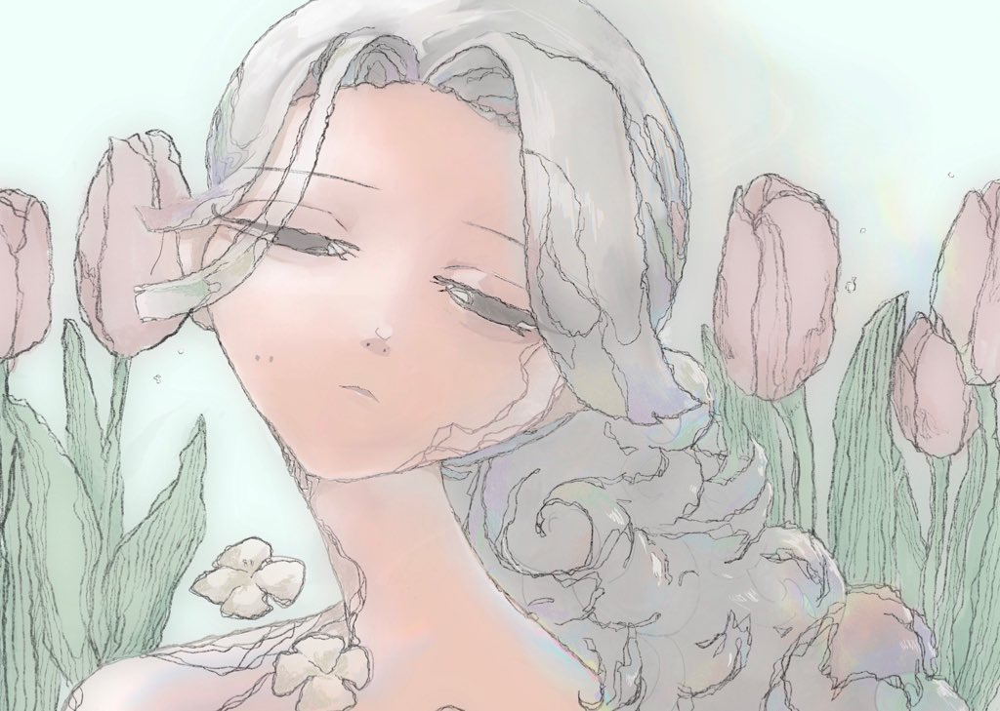

かでんまつり
と
いろいろ

思い出を振り返るたび
それはそれは桜の花びらのように
はらはらと私のそばに降る
世界の好きなところ
-
工芸
青磁やガラス、木彫りに漆芸なんでも
-
画家
ギュスターヴ・カイユボット、アン・マギル、フレデリック・レイトン、オディロン・ルドン
-
建築
ヨーン・ウッツォン、伊東豊雄、ルイス・カーン、カルロ・スカルパ
-
グラフィックデザイン
永井一正、原研哉、田中一光 -
人形作家
月見月、神宮字光、西條冴子 -
ファッション
la belle etude、VIOLETTA、ミエリインヴァリアント、タナカダイスケ -
ポケモン
ポットデス、モスノウ、ギラティナ、シャンデラ

そのほか
-
人狼
狩人が得意です。たまに罠にかかり呆れられる一発芸をやります。
基本的にニコニコしているだけなので黒いです -
読書
なんでも読みます -
アプリ開発
Pythonを勉強ちう -
おちゃ
赤福をください